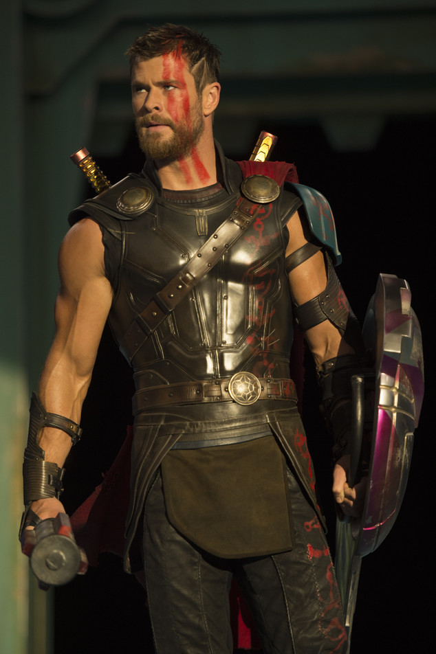

Thor
The Asgardian God of Thunder and protector of the Nine Realms.
Character Overview
Thor Odinson first appeared in Journey into Mystery #83 in 1962. As the son of Odin, he was destined to rule Asgard but had to learn humility before becoming worthy of his power.
In the Marvel Cinematic Universe, Thor battles cosmic threats including Loki, Hela, and Thanos.
Powers and Abilities
- Control over thunder and lightning
- Superhuman strength and durability
- Longevity and divine resilience
- Wields Mjolnir and Stormbreaker
- Interdimensional travel via Bifrost